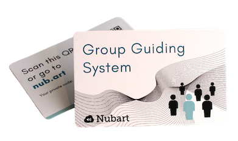

ヌバルトのデジタルツアーガイドシステムに関するよくある質問(団体向け)
Nubartでは、環境への配慮をしています。
印刷に使用するカードには、環境配慮型の素材を選ぶことができます。
印刷に使用するカードには、環境配慮型の素材を選ぶことができます。
- 高強度の特殊ダンボール、FSC認証取得。
- リサイクルされたPVC。
当社の技術の「バックグラウンド作業」はすべてガイドのスマートフォン上で実行されます。そのため、ガイドは高性能プロセッサと比較的新しいバッテリーを搭載した最新型のスマートフォンを使用することが望ましいです。ツアーグループのメンバーが使用するスマートフォンに関してはそこまで高い要求条件は必要ありません。ポッドキャストやオーディオブックを聴く場合と比較して、バッテリー負荷はそれほど高くありません。例えば、4年前のAndroidスマートフォンで1時間連続使用した場合、バッテリーは8%消費されます。
1時間あたり約20MBです。当社のシステムは一方向(ガイドのみが話す)で、ビデオを配信しないため、ZoomやSkypeのビデオ通話よりもはるかに少ないデータ量で済みます。通常の電話よりもさらに少ないです!
デザインのカスタマイズは、当社のミディアムおよびプロフェッショナルパッケージに含まれています。
カードに載せたい画像、ロゴ、その他の要素をお送りいただければ、当社のデザイナーが複数のデザイン案を作成し、お客様に選んでいただけます。
Nubart Liveの料金を確認するにはこちらをクリックしてください
カードに載せたい画像、ロゴ、その他の要素をお送りいただければ、当社のデザイナーが複数のデザイン案を作成し、お客様に選んでいただけます。
Nubart Liveの料金を確認するにはこちらをクリックしてください
下記のNubartのデザインでよろしければ、最低発注数は500枚です。

個別にデザインされたカードをご希望の場合は、最低注文数が3,000枚です。
Nubart Liveの料金を確認するにはこちらをクリックしてください
個別にデザインされたカードをご希望の場合は、最低注文数が3,000枚です。
Nubart Liveの料金を確認するにはこちらをクリックしてください
Nubartのデザインのカードを購入すると、500枚の注文につき2名のツアーガイドがアクセスできます（ベイシックパッケージ）。より多くのカードを注文していただくことで、より多くのツアーガイドの方々がシステムにアクセスできるようになります。5,000枚のカードが入ったプロフェッショナルパッケージを購入すれば、ツアーガイドの数は無制限です。
Nubart Liveの料金を確認するにはこちらをクリックしてください
Nubart Liveの料金を確認するにはこちらをクリックしてください
いいえ。Nubart Liveカードは譲渡不可ですが、再利用は可能ですので、グループメンバー1人につき1枚のカードがあれば十分です。グループの各メンバーに、各自のカードを旅行中に再利用できるように保管しておくようにお願いするだけです。
旅行中の混乱を避けるため、各ユーザーに各自の名前をカードに記入しておくことをお勧めします。
旅行中の混乱を避けるため、各ユーザーに各自の名前をカードに記入しておくことをお勧めします。
インターネットを介して通信する際には、送信者と受信者の間に1秒以下のわずかな遅延（レイテンシー）が発生することは避けられません。
遅延はスマートフォンの性能やインターネット回線の品質、送受信者が使用しているモバイル回線提供会社など、いくつかの要素に影響されます。ツアーガイドはできるだけ小さな声で話すことで、遅延による反響効果を最小限にとどめることができます。
遅延はスマートフォンの性能やインターネット回線の品質、送受信者が使用しているモバイル回線提供会社など、いくつかの要素に影響されます。ツアーガイドはできるだけ小さな声で話すことで、遅延による反響効果を最小限にとどめることができます。

技術的には、個々のQRを生成して、デジタル搭乗券のようにスマートフォンからスキャンしてもらうことも可能です。しかし、私たちのカードを支持する理由はいくつかあります。
- 誰もがQRコードの読み取り方を知っているわけではありません。カードでは英数字のコードを入力する別の方法を提供しています。
- いつも遅れて参加する人がいますが、私たちのカードには説明が書いてあるので、ガイドはそれを素早くスキャンして、黙って手渡すだけです。デジタルオンリーのシステムでは、こんなにスムーズなことはありません！
- 参加者はスマートフォンに問題が発生した場合(ブラウザを誤って閉じてしまった場合など)は、いつでもカードのコードを再入力または再スキャンすることができます。
- カードの譲渡はできませんが、参加者は自分のカードを複数のツアーで再利用することができます。
電話に出たいときは、「ミュート」をクリックするだけで出られます。
グループを保留にしたまま、電話で話すことができます。話が終わったら、ブラウザに戻ってください。 グループ内のすべての参加者が緑色に点灯していない場合は、ページを再読み込みするだけで、すべての接続が自動的に復元され、参加者のQRコードを再度スキャンする必要はありません。
注意：Androidを使用していて、ライブガイドの「ミュート」をクリックし忘れた場合、参加者はあなたの会話内容が聞こえている状態になっています。一方、iPhoneを使用している場合は、自分も相手もグループには聞こえません。
グループを保留にしたまま、電話で話すことができます。話が終わったら、ブラウザに戻ってください。 グループ内のすべての参加者が緑色に点灯していない場合は、ページを再読み込みするだけで、すべての接続が自動的に復元され、参加者のQRコードを再度スキャンする必要はありません。
注意：Androidを使用していて、ライブガイドの「ミュート」をクリックし忘れた場合、参加者はあなたの会話内容が聞こえている状態になっています。一方、iPhoneを使用している場合は、自分も相手もグループには聞こえません。
いいえ。
旅行の最初に、グループ内のすべてのカードをスキャンするだけで、セッションを開くことができます。
そのセッションは、あなたや旅行者がブラウザを閉じても、あなたのNubartアカウントに保存されます。もし、他のメンバーがいても、その人のカードをスキャンするだけで、すでに開かれているグループに追加することができます。とても便利です！
稀ですが、グループのメンバーが自分のカードを再度スキャンしてグループに戻る必要があります。
その時に備えて、カードを保管してもらうことを忘れないでください。
旅行の最初に、グループ内のすべてのカードをスキャンするだけで、セッションを開くことができます。
そのセッションは、あなたや旅行者がブラウザを閉じても、あなたのNubartアカウントに保存されます。もし、他のメンバーがいても、その人のカードをスキャンするだけで、すでに開かれているグループに追加することができます。とても便利です！
稀ですが、グループのメンバーが自分のカードを再度スキャンしてグループに戻る必要があります。
その時に備えて、カードを保管してもらうことを忘れないでください。
1) インターネット接続環境
。 専門的でない、短い回答：。
ネットワークが正しく設定されていれば、要件は高くありません！
。 長い、技術的な答え:
。 ネットワークの設定（NAT、ファイアウォール、トポロジー）がWeb RTCのピアツーピア接続を可能にし、参加者全員が同じWLAN上にいる場合、実際の音声信号はインターネット接続を使用しません。これは、一度接続が確立されると、各リスナーはスピーカーとピアツーピアで接続されるからです。インターネット接続は、各接続を管理するためにのみ必要であり、多くの帯域幅を必要としません。
。 2)WiFi/WLAN
。 LANは、同時使用するユーザーの数に対応できなければなりません（サブネットマスク）。また、WiFiホットスポットは、帯域幅とユーザー数に対応できなければなりません。これを確認するために、貴社の技術スタッフにご相談ください！ ネットワーク構成上、Web RTCのピアツーピア接続ができない場合は、そのようなシナリオを想定した代替システムが用意されています。しかし、この代替システムは、インターネット上の中継サーバー（ターンサーバー）を使用するため、音声信号がインターネットを経由する必要があり（1.を参照）、お客様のネットワーク上ではピアツーピアを許可することをお勧めします。 代わりには ローカルに中継サーバー.
を設定できます。ご希望の場合は、弊社側での追加作業が必要となりますので、お問い合わせください。
。 専門的でない、短い回答：。
ネットワークが正しく設定されていれば、要件は高くありません！
。 長い、技術的な答え:
。 ネットワークの設定（NAT、ファイアウォール、トポロジー）がWeb RTCのピアツーピア接続を可能にし、参加者全員が同じWLAN上にいる場合、実際の音声信号はインターネット接続を使用しません。これは、一度接続が確立されると、各リスナーはスピーカーとピアツーピアで接続されるからです。インターネット接続は、各接続を管理するためにのみ必要であり、多くの帯域幅を必要としません。
。 2)WiFi/WLAN
。 LANは、同時使用するユーザーの数に対応できなければなりません（サブネットマスク）。また、WiFiホットスポットは、帯域幅とユーザー数に対応できなければなりません。これを確認するために、貴社の技術スタッフにご相談ください！ ネットワーク構成上、Web RTCのピアツーピア接続ができない場合は、そのようなシナリオを想定した代替システムが用意されています。しかし、この代替システムは、インターネット上の中継サーバー（ターンサーバー）を使用するため、音声信号がインターネットを経由する必要があり（1.を参照）、お客様のネットワーク上ではピアツーピアを許可することをお勧めします。 代わりには ローカルに中継サーバー.
を設定できます。ご希望の場合は、弊社側での追加作業が必要となりますので、お問い合わせください。